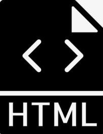

html
HTML称为超文本标记语言，是一种标识性的语言。它包括一系列标签．通过这些标签可以将网络上的文档格式统一，
使分散的Internet资源连接为一个逻辑整体。HTML文本是由HTML命令组成的描述性文本，
HTML命令可以说明文字，图形、动画、声音、表格、链接等。
背景
背景设定
HTML的英文全称是 Hyper Text Markup Language，即超文本标记语言。HTML是由Web的发明者 Tim Berne
rs-Lee和同事 Daniel W. Connolly于1990年创立的一种标记语言，它是标准通用化标记语言SGML的应用。用HTML
编写的超文本文档称为HTML文档，它能独立于各种操作系统平台(如UNIX， Windows等)。使用HTML语言，将所需要表
达的信息按某种规则写成HTML文件，通过专用的浏览器来识别，并将这些HTML文件“翻译”成可以识别的信息，即现在所
见到的网页。
自1990年以来，HTML就一直被用作WWW的信息表示语言，使用HTML语言描述的文件需要通过WWW浏览器显示出效果。
HTML是一种建立网页文件的语言，通过标记式的指令(Tag)，将影像、声音、图片、文字动画、影视等内容显示出来。事
实上，每一个HTML文档都是一种静态的网页文件，这个文件里面包含了HTML指令代码，这些指令代码并不是一种程序语言
，只是一种排版网页中资料显示位置的标记结构语言，易学易懂，非常简单。HTML的普遍应用就是带来了超文本的技术―
通过单击鼠标从一个主题跳转到另一个主题，从一个页面跳转到另一个页面，与世界各地主机的文件链接超文本传输协议规
定了浏览器在运行HTML文档时所遵循的规则和进行的操作。HTTP协议的制定使浏览器在运行超文本时有了统一的规则和标
准。
万维网（world wide web）上的一个超媒体文档称之为一个页面（外语：page）。作为一个组织或者个人在万维网
上放置开始点的页面称为主页（外语：Homepage）或首页，主页中通常包括有指向其他相关页面或其他节点的指针（超级链
接），所谓超级链接，就是一种统一资源定位器（Uniform Resource Locator，外语缩写：URL）指针，通过激活（点
击）它，可使浏览器方便地获取新的网页。这也是HTML获得广泛应用的最重要的原因之一。在逻辑上将视为一个整体的一系
=列页面的有机集合称为网站（Website或Site）。超级文本标记语言（英文缩写：HTML）是为“网页创建和其它可在网页
浏览器中看到的信息”设计的一种标记语言。
网页的本质就是超级文本标记语言，通过结合使用其他的Web技术（如：脚本语言、公共网关接口、组件等），可以创造
出功能强大的网页。因而，超级文本标记语言是万维网（Web）编程的基础，也就是说万维网是建立在超文本基础之上的。超级
文本标记语言之所以称为超文本标记语言，是因为文本中包含了所谓“超级链接”点。
特点

超级文本标记语言文档制作不是很复杂，但功能强大，支持不同数据格式的文件镶入，这也是万维网（WWW）盛行的
原因之一，其主要特点如下：
简易性：超级文本标记语言版本升级采用超集方式，从而更加灵活方便。
可扩展性：超级文本标记语言的广泛应用带来了加强功能，增加标识符等要求，超级文本标记语言采取子类元素的方式，
为系统扩展带来保证。
平台无关性：虽然个人计算机大行其道，但使用MAC等其他机器的大有人在，超级文本标记语言可以使用在广泛的平台
上，这也是万维网（WWW）盛行的另一个原因。
通用性：另外，HTML是网络的通用语言，一种简单、通用的全置标记语言。它允许网页制作人建立文本与图片相结合的
复杂页面，这些页面可以被网上任何其他人浏览到，无论使用的是什么类型的电脑或浏览器。
相关要求
在编辑超文本标记语言文件和使用有关标记符时有一些约定或默认的要求。
文本标记语言源程序的文件扩展名默认使用htm（磁盘操作系统DOS限制的外语缩写为扩展名）或html（外语缩写为扩展名），
以便于操作系统或程序辨认，除自定义的汉字扩展名。在使用文本编辑器时，注意修改扩展名。而常用的图像文件的扩展名
为gif和jpg。
超文本标记语言源程序为文本文件，其列宽可不受限制，即多个标记可写成一行，甚至整个文件可写成一行；若写成多行，浏览
器一般忽略文件中的回车符（标记指定除外）；对文件中的空格通常也不按源程序中的效果显示。完整的空格可使用特殊符
号（实体符）“ （注意此字母必须小写，方可空格）”表示非换行空格；表示文件路径时使用符号“/”分隔，文件名及
路径描述可用双引号也可不用引号括起。
标记符中的标记元素用尖括号括起来，带斜杠的元素表示该标记说明结束；大多数标记符必须成对使用，以表示作用的起始和结束；
标记元素忽略大小写，即其作用相同，但完整的空格可使用特殊符号“ （注意此字母必须小写，方可空格）”；许多标记
元素具有属性说明，可用参数对元素作进一步的限定，多个参数或属性项说明次序不限，其间用空格分隔即可；一个标记元素
的内容可以写成多行。
标记符号，包括尖括号、标记元素、属性项等必须使用半角的西文字符，而不能使用全角字符。
HTML注释由“<!--”号开始，由符号“-->”结束，例如<<--注释内容-->。注释内容可插入文本中任何位置。任何标记若在其
最前插入惊叹号，即被标识为注释，不予显示。